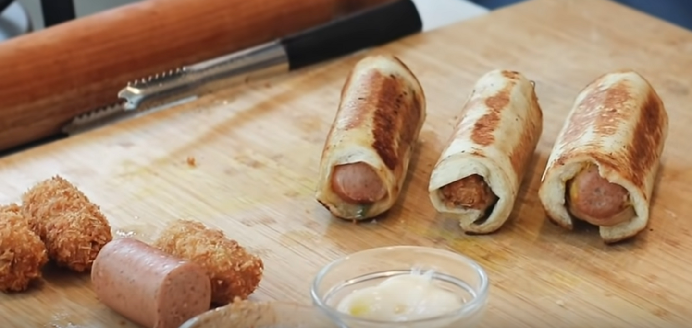

Hotdogs from around the world
Go back to all recipes

Description:
Hot Dog Recipes from three Countries: US, Japan, and Thai. All with Local Ingredients!
American Style:
Ingredients:
- 3 slice white bread
- Kanzler Beef Cocktail Sausages
- Kanzler Bockwurst Sausages
- Butter, as needed
- 1/4 pc onion, sautéed
- 2 tbsp Red Cheddar cheese
- 2 tbsp Mozzarella cheese
- 1 tbsp mustard
- 1 tbsp tomato sauce (optional)
- 1 tbsp mayonnaise
Steps:
- Boil the Kanzler Bockwurst Sausage.
- Make the Katsu coating. Whisk the egg and season with salt and pepper.
- Coat the Kanzler Beef Cocktail Sausage with flour, egg, and breadcrumbs. Repeat it once to make it even more crispy.
- Fry until golden brown.
- Prepare the white bread by trimming the edges. Flatten with a rolling pin.
- Srinkle the bread with some grated Mozzarella and Red Cheddar cheese.
- Spread some mustard and place the boiled sausage on top.
- Add some sautéed onions.
- Roll the bread.
- Heat the pan and add some butter. Grill the hot dog until the bread browns.
- Add some toppings and garnishes, to taste. Hot Dog is ready to serve.
Japanese Style:
Ingredients:
- 3 slice white bread
- Kanzler Beef Cocktail Sausages
- Kanzler Bockwurst Sausages
- Butter, as needed
- Katsu coating (flour, egg, breadcrumbs)
- 1 tbsp sweet Teriyaki sauce
- 1/4 pc onion, sautéed
- 1 tbsp mayonnaise
- 1 sachet seaweed
- 1 stalk spring onions
Steps:
- Boil the Kanzler Bockwurst Sausage.
- Make the Katsu coating. Whisk the egg and season with salt and pepper.
- Coat the Kanzler Beef Cocktail Sausage with flour, egg, and breadcrumbs. Repeat it once to make it even more crispy.
- Fry until golden brown.
- Prepare the white bread by trimming the edges. Flatten with a rolling pin.
- Place nori on top of the bread and spread with mayonnaise.
- Add the Teriyaki sauce, Sausage Katsu, and sautéed onions.
- Roll the bread.
- Heat the pan and add some butter. Grill the hot dog until the bread browns.
- Add some toppings and garnishes, to taste. Hot Dog is ready to serve.
Thai Style:
Ingredients:
- 3 slice white bread
- Kanzler Beef Cocktail Sausages
- Kanzler Bockwurst Sausages
- Butter, as needed
- 1/2 cucumber
- 1/2 carrot
- 2 tbsp Bangkok sauce
- 2 tbsp mayonnaise
- 1 tsp fish sauce
- 1 tsp rice vinegar
- Coriander leaves, as needed
Steps:
- Boil the Kanzler Bockwurst Sausage.
- Make the Katsu coating. Whisk the egg and season with salt and pepper.
- Coat the Kanzler Beef Cocktail Sausage with flour, egg, and breadcrumbs. Repeat it once to make it even more crispy.
- Fry until golden brown.
- Prepare the white bread by trimming the edges. Flatten with a rolling pin.
- Shred the cucumber and carrot.
- Soak the shredded veggies in ice water for a bit. Drain.
- Add vinegar, Bangkok sauce, fish sauce, and mayonnaise to the veggies. Mix well.
- Add the veggies, boiled sausage and coriander leaves to the bread.
- Roll the bread.
- Heat the pan and add some butter. Grill the hot dog until the bread browns.
- Add some toppings and garnishes, to taste. Hot Dog is ready to serve.